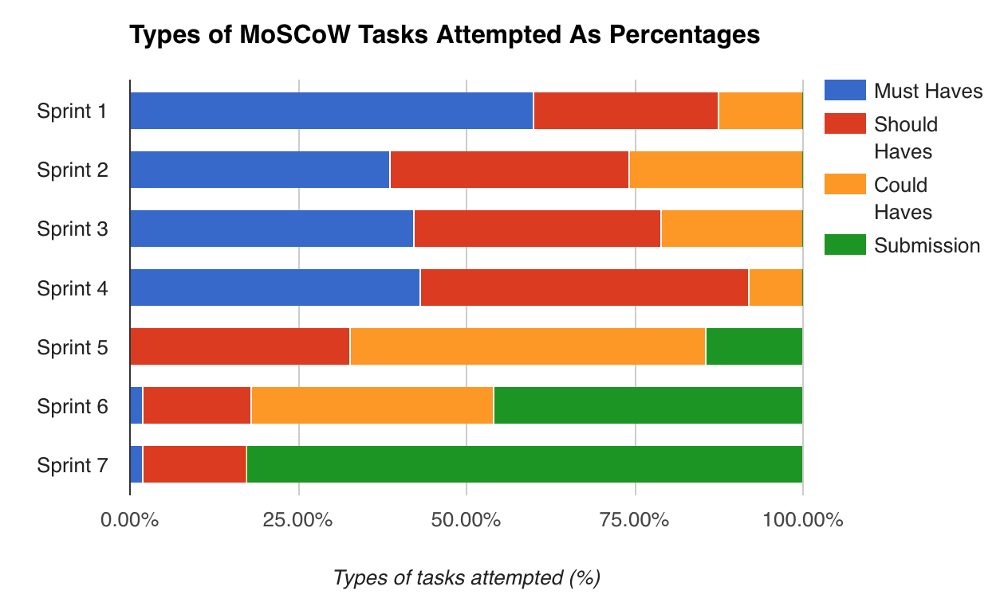
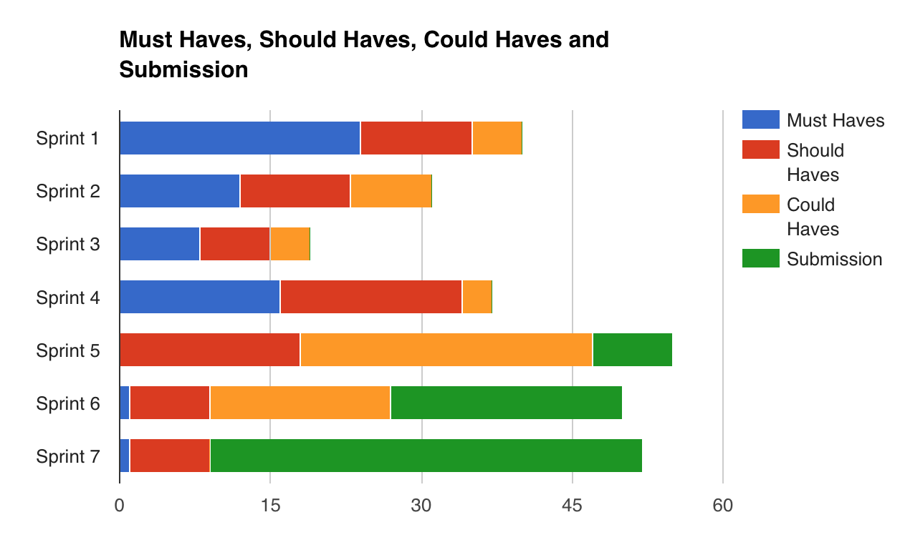
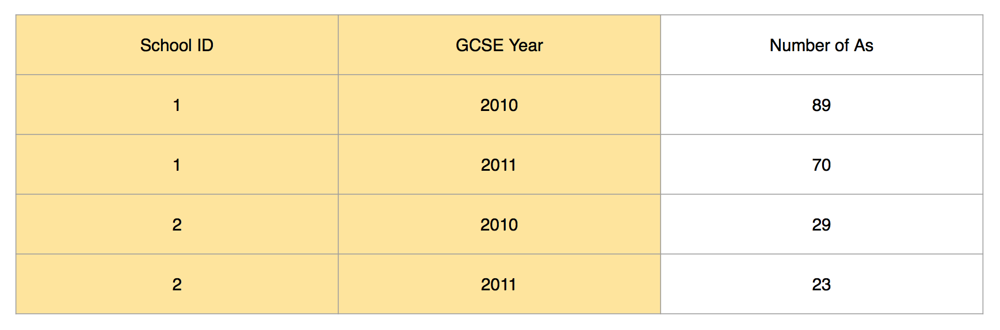
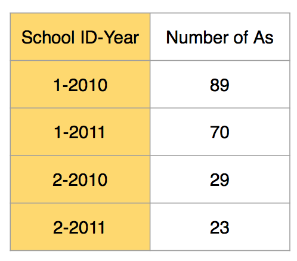
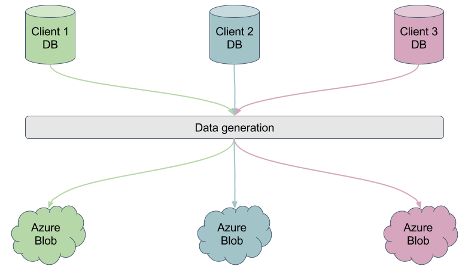
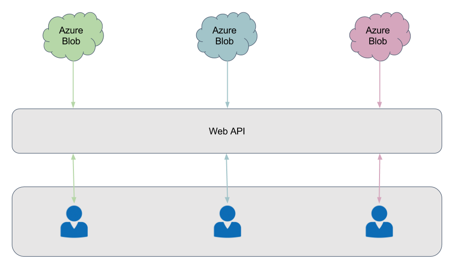

May produce irrelevant sets for tables with multiple primary keys or no primary keys
Testing not yet optimal
Everything happens in one GenerateSets() function, decentralising this method could help
improve testing and scalability
Reader/Writer Libraries
Problem with reading sets in a particular way
Line 98 of the reader file cannot directly call GetJSON() method but must parse string
manually. Solution currently unknown
Summary of progress
We adopted an Agile approach to project development. Each sprint lasted 2 weeks and was
synced with each bi-weekly report. The weights indicate the difficulty and importance of the
task. We used the Fibonacci numbers to separate the weights. A maximum of three tasks could be
assigned the same weight unless there is an exceptionally high number of tasks in the sprint
backlog for a given sprint.
Key
Definition
ANN
Artificial Neural Network
IE
Interpretation Engine
SE
Set Engine
Sprint 1
Sprint 1
Team member contribution (%)
Task in Sprint Backlog
MoSCow ID
Status
Still in use
Weight
Nathan
Lambros
Junwen
Basic version of SE
M2,M3
Complete
Yes
8
100%
Basic version of IE
M6
Complete
No
8
100%
Set File storage system
M1
Complete
No
3
100%
REST end points integration with IE
S1
Complete
No
2
100%
MS Enterprise Library experiments
S4
Complete
Yes
5
100%
REST end point for dummy data
M5
Complete
No
3
100%
Zip files
S3
In progress
Yes
3
20%
80%
Research into UDP
S2
In progress
No
1
20%
80%
Automatic FTP upload to WebServer
M1
Stoped
No
2
100%
Support for multiple databases
C1
In progress
Yes
5
100%
As we were adopting an Agile approach to the project we decided to accomplish the most important
tasks within the first sprint. This meant creating MVPs of as many 'Must Have' requirements as
possible hence the large number of 'Must Have' requirements completed during the first sprint.
We managed to complete these tasks on time and evaluate the work for the next sprint.
Sprint 2
Sprint 2
Team member contribution (%)
Task in Sprint Backlog
MoSCow ID
Status
Still in use
Weight
Nathan
Lambros
Junwen
Optimise existing Set Engine and REST Service
M8
Complete
Yes
5
100%
Optimise IE
M8
Complete
No
5
100%
Set Intersections on Azure VM
S1
Complete
No
3
100%
Read/Write data from Azure Blob
M7
Complete
Yes
2
30%
70%
Zip files
S3
Complete
Yes
5
50%
50%
Support For multiple databases
C1
In progress
Yes
8
100%
Expression Tree experiments
S4
In progress
No
3
100%
During this sprint we aimed to optimise the system as much as possible given the feedback from
the client. We also decided to tackle the core problems to make the system to improve the
scalability of the system. We made improvements to the core components including the Set Engine,
Interpretation Engine and the REST Service.
Sprint 3
Sprint 3
Team member contribution (%)
Task in Sprint Backlog
MoSCow ID
Status
Still in use
Weight
Nathan
Lambros
Junwen
Integration of IE with Azure Blob
C7
Complete
No
8
100%
Fix REST end points for Team 1
S1
Complete
No
13
100%
Feed forwrd ANN for Set Engine
M4
Stopped
No
8
100%
Work on the C# Models for best representation of Sets
C7
Complete
Yes
3
100%
Expression Tree experments
S4
Complete
No
5
100%
Our project workload during the third sprint was less than usual due to Reading week and
Scenario
Week. We managed to fix the REST endpoints and integrate the Interpretation Engine to read files
from the Azure Blob and send these files to Team 1 via the REST API. We also wrote a basic
neural network to classify data types which was going to be used for the Set Engine to
differentiate sets.
Sprint 4
Sprint 4
Team member contribution (%)
Task in Sprint Backlog
MoSCow ID
Status
Still in use
Weight
Nathan
Lambros
Junwen
Development of decision tree and implement into SE
M4
Complete
Yes
8
100%
Integration of IE with the REST Service
C7
Complete
Yes
3
100%
Chart Engine creation and optimisation
S8
Complete
Yes
8
100%
Start work on Web API
M5
Complete
Yes
8
100%
Setup continuous deployment for Web API
S1
Complete
Yes
5
100%
Implementation of ZIP end point
S6
Complete
Yes
5
15%
70%
15%
During the fourth sprint we further optimised our system after feedback from the client. We made
additional upgrades to the Set Engine with
a decision tree to create a greater variety of sets. In a pivot maneuver we made the decision to
remove the Interpretation Engine and integrate its parser with the REST service into one system.
We decided that it would be more efficient for charts to be created in the backend for the
reasons that sets can be loaded almost instantaneously and C# is disproportionately faster than
Javascript. To cater to this we created the Chart Engine that generates Chart Objects given a
REST request.
We also created a new API website.
Sprint 5
Sprint 5
Team member contribution (%)
Task in Sprint Backlog
MoSCow ID
Status
Still in use
Weight
Nathan
Lambros
Junwen
Further optimisation to Chart Engine, SE and libraries
S5, C2, C3
Complete
Yes
8
100%
Speed test and experimentation
S4, S5
Complete
N/A
13
95%
5%
Experimenting with non-blob solution
C7
In progress
Yes
8
100%
Creating a new test db for Solution 2
C7
Complete
Yes
3
100%
Data recovery and creation of database generation tool
C4
Complete
Yes
5
100%
Set creation from multi-key tables
C7
Stopped
No
2
100%
Integration of Chart Engine with REST API
S7
Complete
Yes
3
50%
50%
Start on project website
M0
Complete
Yes
8
5%
95%
Web API Documentation
C5
In progress
Yes
5
100%
During the fifth sprint we made significant improvements to the blob storage system by upgrading
the set engine to produce a more efficient set structure. We suffered a major data loss but
managed to restore the data by creating a new database generation tool. We made further
improvements to the chart engine improving scalability as well as making significant updates to
the REST API including integration of the latest chart engine. We also made a lot of
optimisations by testing a variety of methods and choosing the most efficient solutions. We have
also explored additional approaches to the permanent storage of sets, and have made progress
towards integration with Team 1.
Sprint 6
Sprint 6
Team member contribution (%)
Task in Sprint Backlog
MoSCow ID
Status
Still in use
Weight
Nathan
Lambros
Junwen
Set Engine Emailing
C6
Complete
Yes
5
100%
Unit testing for Set Engine
C8
Complete
Yes
5
100%
Experimenting with non-blob solution
C7
Complete
N/A
3
100%
Further work on Solution 2
C7
Complete
Yes
5
100%
Project website development
M0
In progress
Yes
13
85%
10%
5%
Web API Final Endpoints
S1
Complete
Yes
8
100%
Web API Documentation
M5, M0
Complete
Yes
3
100%
Imagine Cup Application
M0
Complete
N/A
8
50%
50%
For the sixth sprint we focused on the remaining 'Could Have' requirements. Lambros conducted
further experiments into alternative solutions while Nathan developed the last features for the
Set Engine and developed the project website with Junwen. We also submitted the Web API for
the Microsoft Imagine Cup competition.
Sprint 7
Sprint 7
Team member contribution (%)
Task in Sprint Backlog
MoSCow ID
Status
Still in use
Weight
Nathan
Lambros
Junwen
Finalise API Website (User manual)
M5, M0
Complete
Yes
2
100%
Create system manual
M0
Complete
Yes
3
100%
Create project video
M0
Complete
Yes
8
50%
50%
Finish project website
M0
Complete
Yes
13
95%
5%
Further API Development
M0, S1
Complete
Yes
8
30%
70%
Further Experimenting and Testing
S4
Complete
Yes
5
100%
Final Presentation
M0
Complete
Yes
13
33%
33%
33%
During the final sprint we focused on further system integration and pushing out the final
results of our research. We met with Team 1 several times to help integrate the product.
Additionally we conducted further meetings to work on the presentation, video and website. We
also created the system manual (Web API Website) and user manual for the project.
Architecture
Integration Engine
We tried to keep the architecture of the system as simple as possible. One major pivot
decision
was to remove the Integration Engine during the fourth sprint which was one of the main
components in our system. This was to simplify the process down. We realised that we did not
need a complex parser to map a request to a set but instead we could map a request directly
to a
set without any parsing. This greatly reduced complexity and improved the speed to
retrieving
sets as time was not wasted parsing.
REST API
We tried to keep the URLs of our API uniform, by adhering to the common practice of using
singular nouns to suffix our requests. Due to the nature of our API, most (if not all) of
the requests are of the GET variety, so the action performed by each URL becomes quite easy
to decipher.
In an effort to add more features and to make the API more flexible, we found that we were
driven to increasing the depth of our URLs in a way which made the API unnecessarily
complex. To combat this, we changed our structure early on and we adopted the '?'
parametrisation format. For example, requesting a Set of Students along with their
MathsGrade would look like this:
/api/Set/Student/MathsGrade
but with the new design, it is much more intuitive:
/api/Set?setType=Student&setProperty=MathsGrade
REST API Error Handling
For each type of request our API takes, we provide an informative error response when
something goes wrong. Providing useful error responses will help developers get to know the
API.
Set Engine
The Set Engine and its Decision Tree are both singletons. This helps with keeping track of
the flow of data at runtime as the data is either in the Set Engine or in the Decision Tree.
The fork/join design pattern helps us to keep control of the threads and flow of the
program. Most importantly the fork/join pattern limits the number of sets in heap memory at
run time thereby helping to reduce the risk of an OutOfMemoryException. Once all threads
have joined the Set (along with its subsets) can be removed by the garbage collector and the
Set Engine will begin creating the next Set.
Efficiency
Random Sampling Algorithm
We evaluated the algorithm's time complexity to O(n) where n is the number of random samples
to be selected.
Transportation
We found ZIP to be the most efficient method of transportation with the lowest error rate out
of the methods we tried. We also found that TCP and UDP are roughly the same in terms of
speed with UDP gaining about a 4.5% speed up against TCP.
The REST API on a fast
connection returns sets
within 1 second for a medium sized set (circa 100000 data points) and around 2 seconds for
larger sets (>1 million) with set operations.
Chart Creation
From our experiments we found that using multi-threading and JSON splitting to be the fastest
method of creating the Chart objects. Reading from a local database gave a speed up of about
5 times compared to reading from a cloud blob.
Continuous Integration
We have implemented continuous integration with out Web API to ensure everything will work as
new features are being deployed. In the future we could extend this to all components in our
system.
Compatibility
REST API
The REST API should be able for use to every developer wishing to use this API.
Set Engine
The Set Engine should be able to work with any database. It is using the MySQL
connector classes to connect to the database. We have experimented with ADO.NET to read from
SQL and MySQL databases and integrating this feature with the Set Engine can ensure
compatibility with SQL databases.
Maintainability
Azure
In terms of maintenance the system should be fully functional on Azure. For very large datasets
scaling to a more expensive VM may be required to increase the working memory of the Set Engine
at run time. With circa 10 million data points we noticed OutOfMemory exceptions on a standard
tier VM. We have tried to make the system more memory efficient by removing storage of Sets
after they have been uploaded to the Blob.
Set Engine Memory Feasibility
If the entire application is single threaded
OutOfMemory exceptions are less likely to occur however the set creation process will be much
slower. It is important to consider the trade-off between speed and memory usage in
this instance. If the system is multi-threaded it will be faster but may also use up memory
faster than the garbage collector can remove it. On the other hand we can reduce the memory
usage but at the expense of increased computation time. We have implemented a fork/join design
pattern to help minimise memory usage while maximising speed. However even with the design
pattern a run without memory leaks are not guarenteed in all cases and so this should be a case
to be aware of when undergoing system maintenance.
Set Engine Automation
The Set Engine contains a suite of features for automation. The Set Engine can be run on the
Windows Tasks Scheduler application available on all Windows Servers 2012 and later. In addition
the Set Engine also includes an automated emailing service to notify administrators of any
defects that have occurred during a particular run and so problems likely to be identified and
solved quicker.
Evaluation of Testing
Speed Tests
Problem One of the main priorities of the project was to experiement with
different methods of
transporting and manipulating the data. SIMS face major difficulties with computing
the data
on a large scale so it was imperative for us to try our best to find the fastest
possible
methods for our clients.
Methodology We identified the key areas where the system was slowest. This was
sending data over the REST API and computing the Chart objects. Once key areas for
speed testing was identified we attempted multiple different solutions of solving
the problem. We measured the average time for each solution and compared the
solutions against each other.
Conclusion We found that JSON Splitting and multi-threading were the best
solution as it had the fastest time for generating Chart objects and reading data
from a database on the same server as the REST service had the fastest read time. We
also discovered that sending a ZIP file was the fastest method of transportation.
Error Testing
Data Transportation Randomly selecting 1000 to 50000 samples from a set happened to
be very fast for transporting data across a TCP stream. When two randomly sampled sets
were intersected (e.g. Two random
samples of 5000 IDs from two Sets) we found that the error rate of the intersection fell
below 0.1% after about about 13000 - 15000 random samples given a set of 500000 unique
IDs. This was unfortunately accompanied with the fact that no more than 60 observed
intersections occurred between two randomly sampled sets. This was bad in case the user
wanted to further intersect the new set with another set. As a result we decided to
stick with using ZIP files.
Unit Testing
Set Engine We created a Test database for the Set Engine. The Test database contained
data where we could determine the output set that should be created. For each predicted
output set we created a unit test and tested it against the predicted set created by the
Set Engine.
Project Management
Decision to choose Agile Scrum
Due to miscommunication between our team, the department and our client we experienced major
set backs
during
the early stages of the project. The team was switched to a new project towards the end of
November giving us two weeks to gather new requirements, research and prototyping before the
website and video deadline for COMP204P. As a result this left us with a huge backlog of
work to do for next term.
To counteract the massive backlog of work
resulting from COMP204P we decided to adopt an Agile approach to developing the system. We
could therefore develop the most important features first and iterate towards an optimal
feature. We would only conduct further research and prototyping on the features that
worked and dropped the features that did not work. This gave us the time we needed to
develop the system to its best potential while also conducting the missed out research that
would have otherwise happened during Term 1.

Figure 1: Analysis of requirements attempted per sprint
We analysed the progress of our sprints and noticed that 'Must Have' requirements show up most
frequently at the start. Then 'Should Have' requirements start increasing in frequency followed
by 'Could Have' requirements. By sprint 5 we had completed most of the 'Must Have' requirements
and'Should Have' and 'Could Have' requirements made up circa 80% of our workload. The number of
tasks related
to the final
submission (in green) also started to rise at the start of the fifth sprint and accounted for
almost 85% of our workload during the final sprint.
Figure 2: Chart showing the total weights of our work for each sprint.
We plotted the bar chart of the total combined weight for each sprint. Sprint 3 was reading week
followed by Scenario week and so the output for the third sprint was particularly low. We could
have put in a lot more effort for Sprint 2 and 4.

Figure 3: Chart showing the total weights of our work for each sprint with the task category.
The above graph is a combination of Figure 1 and 2. The graph shows the weights and how much was
contributed towards each requirement type.
Future Work
Lazy Evaluation
Another future development which can help make the data delivery faster and more
efficient, would be the introduction of a lazy data delivery system. The idea behind
this would be that only the data that is actually needed at that point in time would be
sent across to the client’s web browser.
For example, let’s say the client requests the data set “all students with the property
gender”, with a view of plotting a bar chart that showcases how many female against how
many male students the school(s) have. Bearing in mind that this could be data from
hundreds of schools, this would be a very large Json string to return. With lazy data
return, the values first returned would literally be just the ratios needed to plot the
bar chart (i.e. what our Chart Engine is doing now). Let’s then say that the client want
to view the actual student “within” the male subset of students. Instead of returning
the whole subset which could consist of thousands of students, the lazy system could
return only as many students as the screen/canvas area can fit at that moment, caching
the rest on the server for later delivery.
User Authentication
Because this is an education project, which has the potential to handle actual data from
schools, privacy and security should be a big part of any future development. One really
important thing to think about would be the access levels of different clients to the
data on the system’s servers. For example, clients from a particular school should only
be allowed to request data from their own schools, whereas local borough authorities
only data from their own borough.
Multiple Primary Key Tables
One difficulty we came across were tables with multiple primary keys. In Figure 4 we
have
the School ID and the Academic Year as the primary keys.

Figure 4: Sample table with two primary keys
The solution we proposed was to concatenate the primary keys to form the set. This
resulted
in
the
set in Figure 5 when we viewed the results.

Figure 5: The resulting table from the proposed algorithm
From analysis we can see that this would not work well with other sets since other
sets
usually
have IDs of the Academic year or School ID but rarely both.
A solution may be
to
split
the ID by a delimiter and see how this would interact with other sets. Given an
additional 6
months this could be an area of future work.
Scaling the system for all schools (clients)
The current system generates a blob for one database. In the future this can be
expanded to
all the clients. Each client will have their own set database on a container on
Azure. Then
when a client logs into their account the Web API will then read data from the
clients
container blob.

Figure 6: Set Engine or some data generation engine reading from every
client's
database and
creating each client a set storage on a blob on Azure.

Figure 7: Diagram showing clients retrieving data from each of their own
individual
blobs.